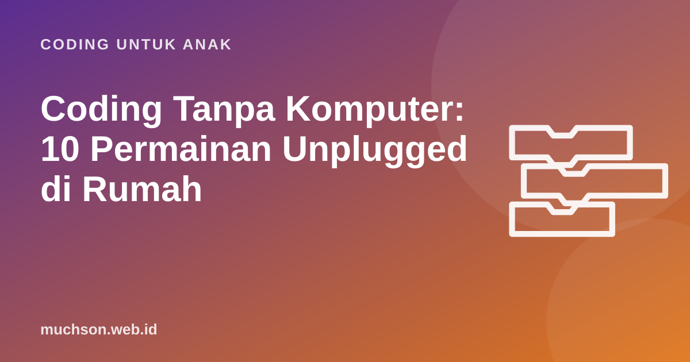

Beranda › Artikel › Coding untuk Anak
Coding untuk AnakCoding Tanpa Komputer: 10 Permainan Unplugged di Rumah
Anak tidak harus duduk di depan layar untuk mulai belajar coding. Konsep inti seperti algoritma, pola, dan logika bisa dilatih dengan kertas, kartu, dan badan sendiri. Pendekatan ini disebut computer science unplugged, dikembangkan antara lain oleh peneliti di University of Canterbury, Selandia Baru. Berikut 10 permainan yang bisa langsung dimainkan di rumah.

Kenapa permainan tanpa layar efektif?
Proyek CS Unplugged sejak 1990-an menunjukkan bahwa ide-ide ilmu komputer bisa diajarkan lewat permainan fisik, teka-teki, dan cerita. Keunggulannya bagi keluarga Indonesia: tidak butuh perangkat mahal, tidak menambah waktu layar, cocok untuk anak yang belum lancar membaca, dan melibatkan gerak tubuh yang membantu anak kecil memahami konsep abstrak.
Permainan unplugged bukan pengganti coding di komputer, melainkan jembatannya. Anak yang sudah memahami "algoritma" lewat permainan biasanya lebih cepat paham saat bertemu blok Scratch.
Permainan untuk usia 4-7 tahun
1. Robot manusia (algoritma)
Orang tua menjadi "robot" yang hanya mengerti perintah: maju, belok kiri, belok kanan. Anak memberi perintah untuk menuntun robot ke kulkas. Robot harus patuh persis, termasuk menabrak meja bila perintahnya salah. Tukar peran setelah beberapa ronde.
2. Kartu panah di lantai (program)
Buat kartu bergambar panah ↑ ← → dari kertas. Tentukan start dan tujuan di lantai berubin. Anak menyusun kartu dulu, baru robot (boneka atau saudara) berjalan mengikuti kartu. Bedanya dengan permainan 1: program disusun sebelum dijalankan, persis seperti di komputer.
3. Pola manik-manik (pengenalan pola)
Susun manik-manik atau kancing dengan pola merah-biru-biru-merah-biru-biru. Minta anak meneruskan, lalu menjelaskan aturannya. Naikkan tingkat kesulitan dengan pola dua aturan (warna dan ukuran).
4. Instruksi menggambar (presisi)
Anak menggambar bentuk sederhana tanpa memperlihatkannya, lalu memberi instruksi lisan kepada Anda untuk menggambar ulang. Bandingkan hasilnya. Biasanya lucu dan sangat berbeda, dan itu pelajaran tentang betapa pentingnya instruksi yang jelas.
5. Sortir mainan (klasifikasi dan kondisi)
"Jika mainan berwarna merah, taruh di keranjang A. Jika tidak, di keranjang B." Lalu tambah aturan: "Jika merah dan beroda ..." Anak sedang berlatih percabangan dan operator logika.
Permainan untuk usia 8-11 tahun
6. Bilangan biner dengan jari atau kartu (representasi data)
Siapkan 5 kartu bertuliskan 16, 8, 4, 2, 1 (kiri ke kanan). Kartu menghadap ke atas berarti 1, tertutup berarti 0. Minta anak membuat angka 13 (8 + 4 + 1 → 01101). Ini cara komputer menyimpan angka. Aktivitas "binary numbers" ini salah satu yang paling terkenal dari CS Unplugged.
7. Tebak angka 1-100 (algoritma pencarian)
Anda memikirkan angka, anak menebak, Anda menjawab "lebih besar" atau "lebih kecil". Hitung jumlah tebakan. Setelah beberapa ronde, ajak anak menemukan strategi terbaik: selalu menebak di tengah. Dengan strategi ini, angka 1-100 selalu ketemu dalam paling banyak 7 tebakan. Itu pencarian biner, algoritma yang dipakai komputer untuk mencari data dengan cepat.
8. Kode rahasia (enkripsi sederhana)
Buat sandi geser: setiap huruf diganti huruf yang 3 tempat sesudahnya (A→D, B→E). Kirim pesan rahasia di kotak bekal anak. Ini sandi Caesar, bentuk enkripsi tertua yang dikenal, dan pintu masuk menarik ke konsep keamanan data.
9. Pengurutan dengan timbangan (algoritma sortir)
Siapkan 6 botol berisi air dengan isi berbeda dan satu timbangan sederhana (gantungan baju dengan dua kantong). Anak hanya boleh membandingkan dua botol sekaligus. Bagaimana mengurutkan dari yang teringan? Anak akan menemukan sendiri strategi seperti bubble sort atau selection sort.
10. Debugging resep (mencari kesalahan)
Tulis resep membuat roti selai dengan kesalahan sengaja: langkah tertukar atau terlewat. Anak menjadi "detektif bug" yang menemukan dan memperbaikinya.
Ringkasan: permainan dan konsepnya
| No | Permainan | Usia | Konsep | Bahan |
|---|---|---|---|---|
| 1 | Robot manusia | 4+ | Algoritma, urutan | Tidak ada |
| 2 | Kartu panah | 5+ | Program, perencanaan | Kertas |
| 3 | Pola manik-manik | 4+ | Pola | Manik, kancing |
| 4 | Instruksi menggambar | 6+ | Presisi instruksi | Kertas, pensil |
| 5 | Sortir mainan | 4+ | Kondisi, logika | Mainan, keranjang |
| 6 | Kartu biner | 8+ | Representasi data | 5 kartu |
| 7 | Tebak angka | 7+ | Pencarian biner | Tidak ada |
| 8 | Kode rahasia | 8+ | Enkripsi | Kertas |
| 9 | Sortir botol | 8+ | Algoritma sortir | Botol, gantungan |
| 10 | Debugging resep | 7+ | Debugging | Kertas |
Tips agar permainan berhasil
- Durasi pendek. 15-20 menit untuk anak di bawah 7 tahun.
- Rayakan bug. Saat robot menabrak, tertawa bersama dan cari langkah yang salah.
- Tukar peran. Anak juga harus merasakan menjadi "komputer" yang patuh.
- Hubungkan dengan istilah. Setelah bermain, sebutkan namanya: "Tadi kamu membuat algoritma."
Dari lantai ke layar
Permainan robot manusia dan kartu panah punya pasangan digital yang sangat dekat: latihan robot di grid. Anak menyusun perintah maju, belok kiri, dan belok kanan, lalu melihat robot menjalankannya. Coba bersama anak setelah ia lancar bermain di lantai:
Kalau anak menikmatinya, Pelajaran 1 dan 2 PixelKode bisa dicoba gratis: Robo melanjutkan petualangannya di 10 level, lalu anak mulai membuat animasi di Studio.
Tanya jawab
Apa itu coding unplugged?
Usia berapa bisa mulai permainan unplugged?
Apakah unplugged cukup untuk belajar coding?
Di mana mencari aktivitas unplugged lain?
Sumber dan bacaan lanjut
- CS Unplugged (University of Canterbury)
- Bell, T., & Vahrenhold, J. (2018). CS Unplugged: How Is It Used, and Does It Work?
- Code.org: pelajaran unplugged untuk sekolah dasar
- Bebras Indonesia